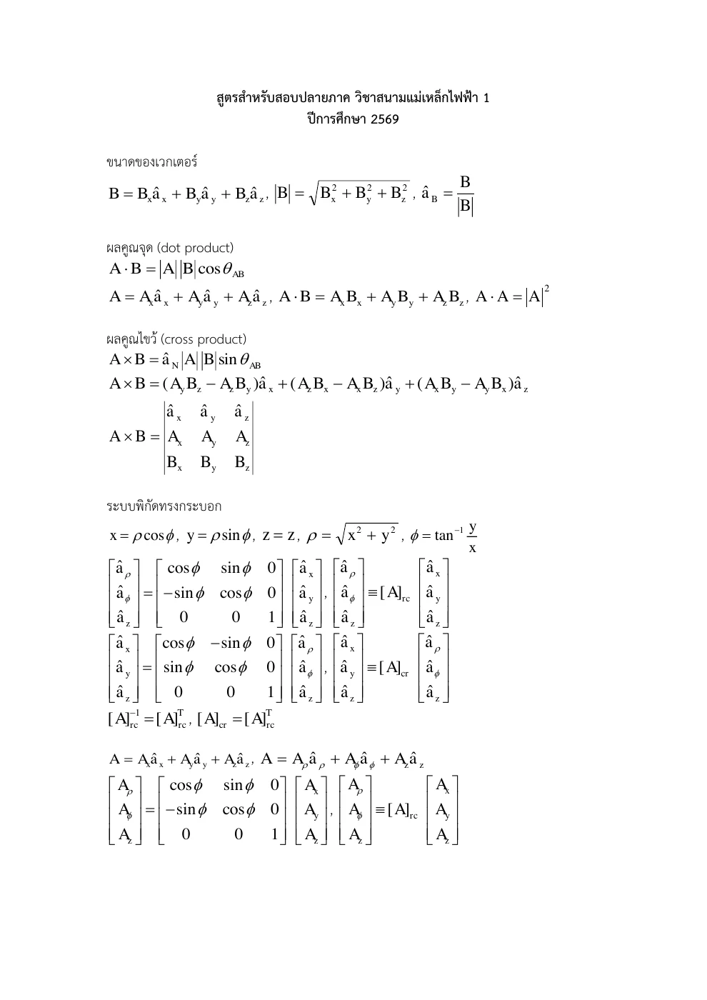
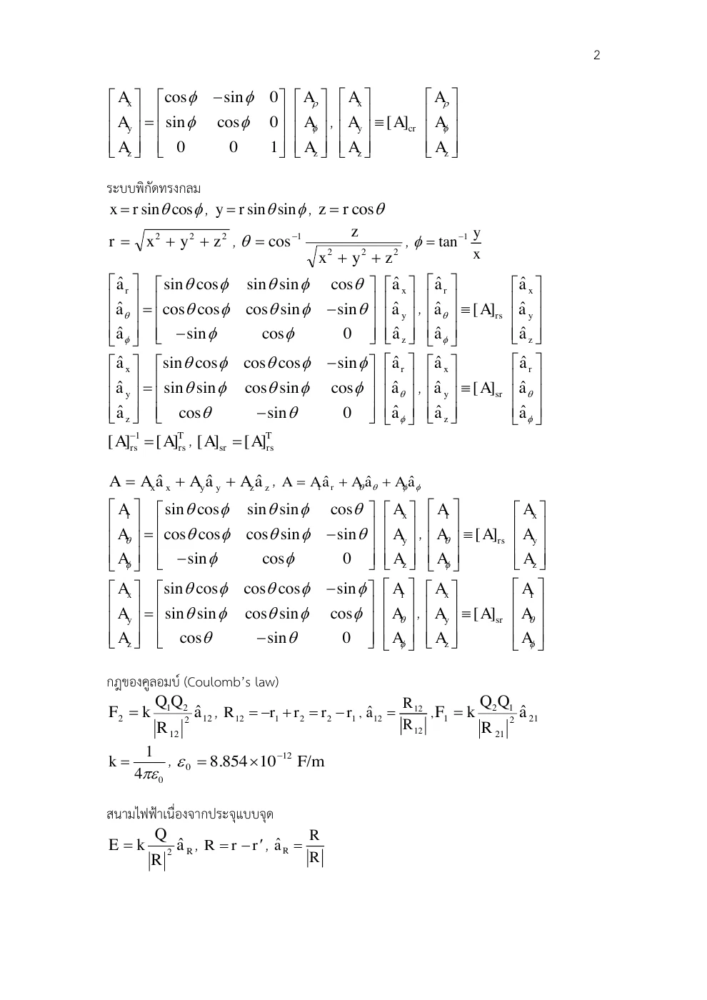
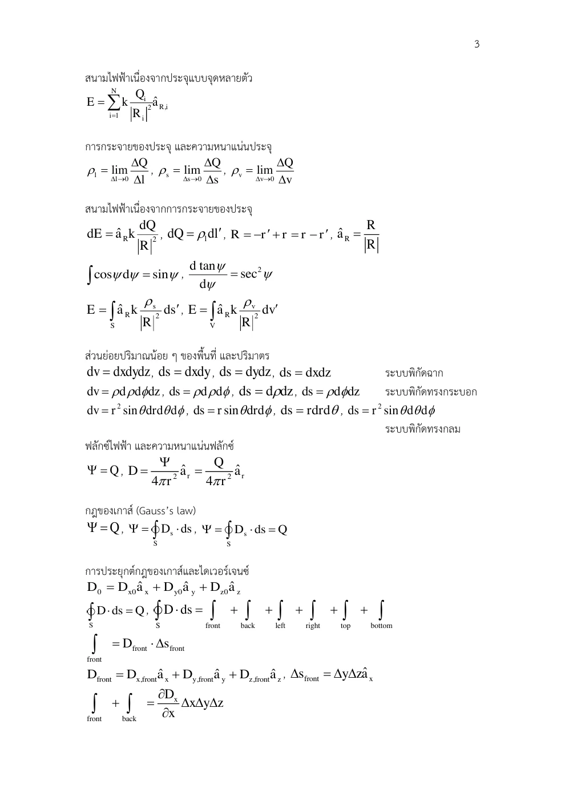
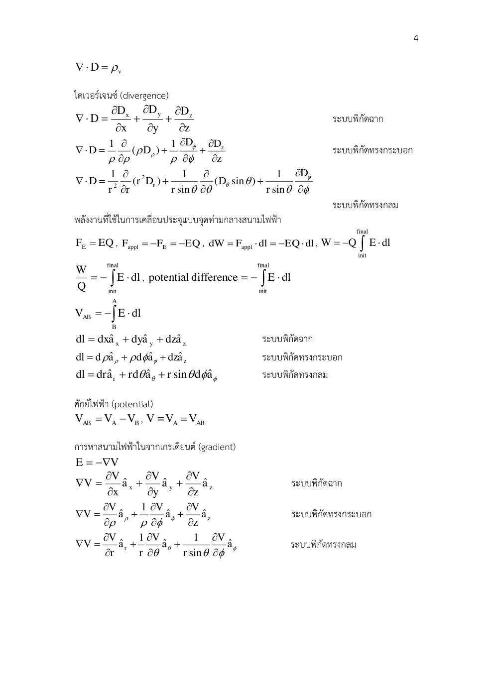
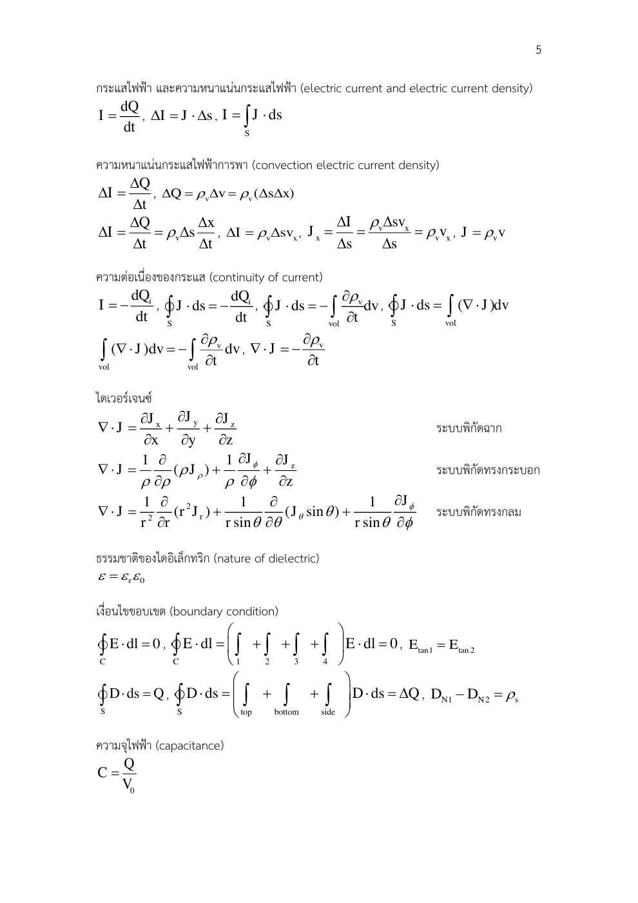
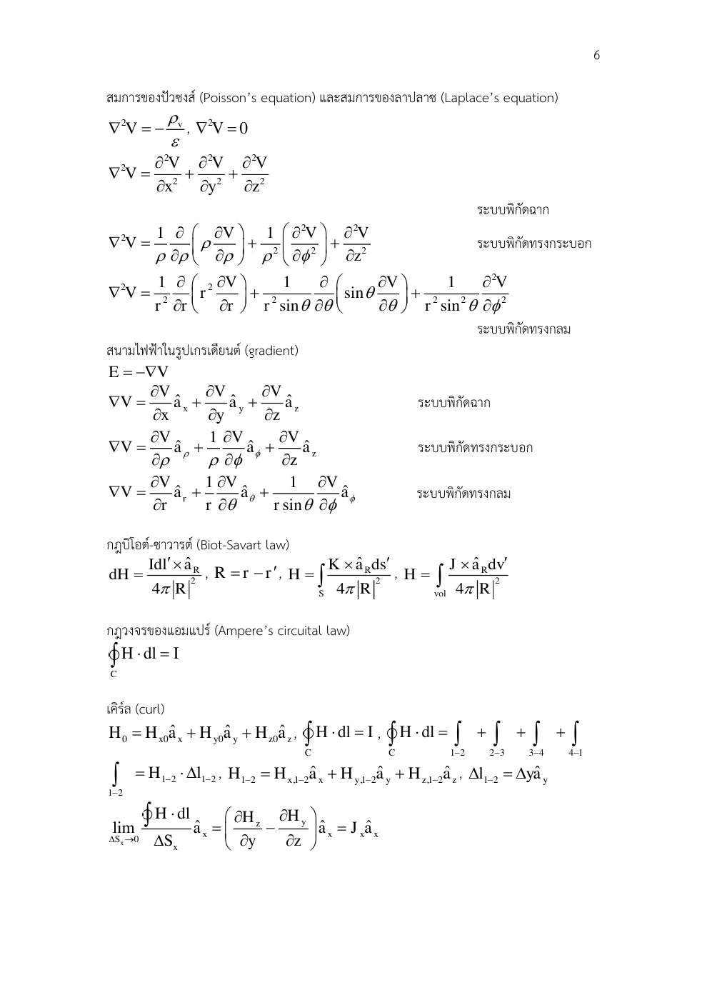
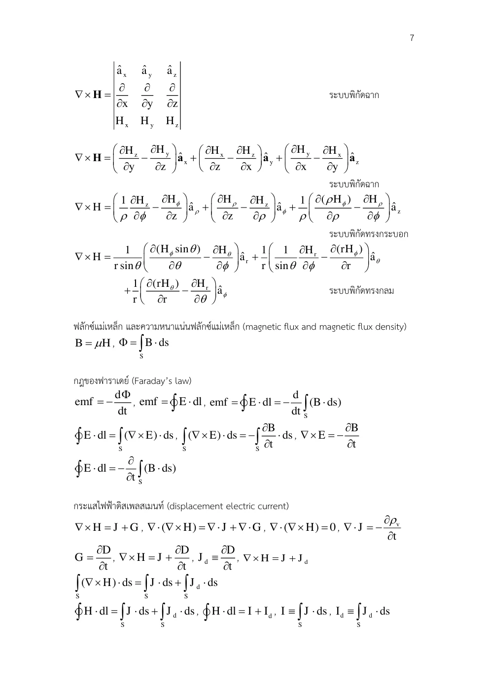
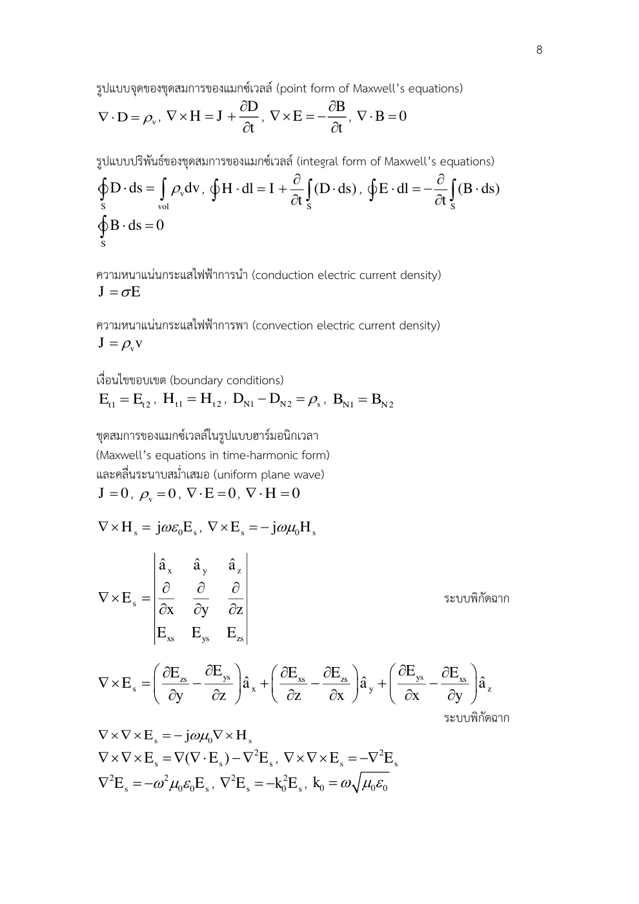
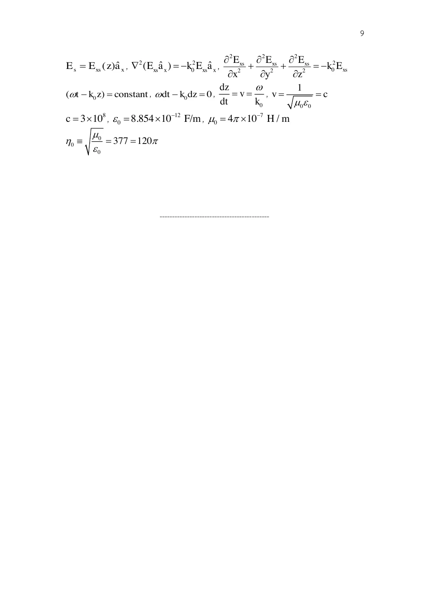

หน้า 1 · เวกเตอร์และการแปลงทรงกระบอก
ขนาด เวกเตอร์หน่วย และผลคูณจุด
B = Bxax + Byay + Bzaz
|B| = √(Bx2 + By2 + Bz2)
aB = B|B|
A • B = |A| |B| cos θAB = AxBx + AyBy + AzBz
A • A = |A|2
เวกเตอร์หน่วยไม่มีหน่วย; B ต้องไม่เป็นศูนย์เมื่อหารด้วยขนาด
ผลคูณไขว้
A ×
B = |
A| |
B| sin θ
AB aNA ×
B =
= (
AyBz −
AzBy)
ax + (
AzBx −
AxBz)
ay + (
AxBy −
AyBx)
az aN มีทิศตามมือขวา; ผลคูณไขว้สลับลำดับแล้วกลับเครื่องหมาย
พิกัดและเมทริกซ์ทรงกระบอก
x = ρ cos ϕ; y = ρ sin ϕ; z = z
ρ = √(x
2 + y
2); ϕ = atan2(y,x)
=
| cos ϕ | sin ϕ | 0 |
| −sin ϕ | cos ϕ | 0 |
| 0 | 0 | 1 |
Trc =
| cos ϕ | sin ϕ | 0 |
| −sin ϕ | cos ϕ | 0 |
| 0 | 0 | 1 |
;
Tcr =
| cos ϕ | −sin ϕ | 0 |
| sin ϕ | cos ϕ | 0 |
| 0 | 0 | 1 |
=
TrcT =
Trc−1x,y,z,ρ มีหน่วย m; ϕ ใช้ rad เมื่ออินทิเกรต เมทริกซ์เดียวกันใช้กับเวกเตอร์ฐาน ต้นฉบับเขียน tan⁻¹(y/x); ฉบับเว็บใช้ atan2 พร้อมตรวจควอดรันต์
เทียบใบสูตรต้นฉบับ · หน้า 1

เปิดหน้าต้นฉบับ · หน้า PDF 1
หน้า 2 · พิกัดทรงกลม คูลอมบ์ และสนามประจุจุด
เมทริกซ์กลับทรงกระบอก
=
| cos ϕ | −sin ϕ | 0 |
| sin ϕ | cos ϕ | 0 |
| 0 | 0 | 1 |
ใช้มุมที่ตำแหน่งของเวกเตอร์นั้น
พิกัดทรงกลม
x = r sin θ cos ϕ; y = r sin θ sin ϕ; z = r cos θ
r = √(x2 + y2 + z2); θ = cos−1(zr); ϕ = atan2(y,x)
θ วัดจาก +z อยู่ในช่วง 0 ถึง π; ที่ r = 0 มุมไม่กำหนด
เมทริกซ์ทรงกลมไป–กลับ
=
| sin θ cos ϕ | sin θ sin ϕ | cos θ |
| cos θ cos ϕ | cos θ sin ϕ | −sin θ |
| −sin ϕ | cos ϕ | 0 |
=
| sin θ cos ϕ | cos θ cos ϕ | −sin ϕ |
| sin θ sin ϕ | cos θ sin ϕ | cos ϕ |
| cos θ | −sin θ | 0 |
Tsr =
TrsT =
Trs−1เมทริกซ์นี้ใช้กับเวกเตอร์ฐานได้เช่นเดียวกับองค์ประกอบ; ฐานที่จุดต่างมุมอาจต่างทิศ
กฎคูลอมบ์และระยะทาง
F2 = kQ1Q2R122a12
R12 = r2 − r1; a12 = R12R12
F1 = kQ2Q1R212a21
k = 14πε0; ε0 = 8.854 × 10−12 F/m
Q เป็น C, R เป็น m, F เป็น N; k ของใบสูตรนี้เป็นค่าคูลอมบ์ อย่าสับสนกับเลขคลื่น
สนามประจุจุด
E = kQR2aR
R = r − r′; aR = RR
r คือจุดสังเกต r′ คือแหล่งกำเนิด E เป็น V/m
เทียบใบสูตรต้นฉบับ · หน้า 2

เปิดหน้าต้นฉบับ · หน้า PDF 2
หน้า 3 · การกระจายประจุ ส่วนย่อยผิว และเกาส์
รวมสนามและนิยามความหนาแน่น
E = ∑i=1N kQiRi2aR,i
ρl = limΔl→0ΔQΔl; ρs = limΔs→0ΔQΔs; ρv = limΔv→0ΔQΔv
ρl: C/m, ρs: C/m², ρv: C/m³; รวมเวกเตอร์ในฐานร่วม
สนามกระจายเส้น ผิว และปริมาตร
dE = kdQR2aR; dQ = ρl dl′
E = ∫L kρlR2aR dl′
E = ∫S kρsR2aR ds′
E = ∫vol kρvR2aR dv′
∫ cos ψ dψ = sin ψ; d(tan ψ)dψ = sec2 ψ
ส่วนที่มี ′ อยู่ที่แหล่งกำเนิด ต้องให้ R = r − r′
ส่วนย่อยผิวและปริมาตร
ฉาก: dv = dx dy dz; ds = dx dy หรือ dy dz หรือ dx dz
ทรงกระบอก: dv = ρ dρ dϕ dz; ds = ρ dρ dϕ หรือ dρ dz หรือ ρ dϕ dz
ทรงกลม: dv = r2 sin θ dr dθ dϕ; ds = r sin θ dr dϕ หรือ r dr dθ หรือ r2 sin θ dθ dϕ
เลือก ds ตามผิวที่พิกัดหนึ่งคงที่ แล้วเติมเวกเตอร์ปกติเมื่อใช้ ds; ds: m², dv: m³
ฟลักซ์ไฟฟ้าและเกาส์
Ψ = Q; D = Q4πr2ar
Ψ = ∫S D • ds; ∯S D • ds = Qenc
สูตร D รัศมีนี้สำหรับประจุจุดหรือสมมาตรทรงกลม; Ψ: C, D: C/m²
กล่องเล็กสู่ไดเวอร์เจนซ์
∯S D • ds = ∑หกด้าน Dด้าน • Δsด้าน
Δsfront = ΔyΔz ax
ฟลักซ์คู่หน้า–หลัง = ∂Dx∂xΔxΔyΔz
ฝาตรงข้ามมีปกติกลับทิศ; เขียน D แต่ละด้านจากสนามที่จุดนั้น
เทียบใบสูตรต้นฉบับ · หน้า 3

เปิดหน้าต้นฉบับ · หน้า PDF 3
หน้า 4 · ไดเวอร์เจนซ์ งาน ศักย์ และเกรเดียนต์
ไดเวอร์เจนซ์สามพิกัด
∇ • D = ρv
∇ • A (ฉาก) = ∂Ax∂x + ∂Ay∂y + ∂Az∂z
∇ • A (ทรงกระบอก) = 1ρ∂(ρAρ)∂ρ + 1ρ∂Aϕ∂ϕ + ∂Az∂z
∇ • A (ทรงกลม) = 1r2∂(r2Ar)∂r + 1r sin θ∂(Aθ sin θ)∂θ + 1r sin θ∂Aϕ∂ϕ
เปลี่ยน A เป็น D หรือ J โดยคงตัวคูณพิกัด; ถ้า A เป็น D ผลเป็น C/m³
งานและความต่างศักย์
FE = QE; Fappl = −QE
dW = −QE • dl; W = −Q∫initfinal E • dl
WQ = −∫initfinal E • dl
VAB = VA − VB = −∫BA E • dl
สนามสถิตและเคลื่อนประจุอย่างช้า; W เป็น J, V เป็น V; จุดเริ่มของ VAB คือ B
ส่วนความยาวสามพิกัด
dl = dx ax + dy ay + dz az
dl = dρ aρ + ρ dϕ aϕ + dz az
dl = dr ar + r dθ aθ + r sin θ dϕ aϕ
dl เป็น m; มุมในส่วนเชิงอนุพันธ์ต้องใช้ rad
เกรเดียนต์สามพิกัด
E = −∇V
∇V (ฉาก) = ∂V∂xax + ∂V∂yay + ∂V∂zaz
∇V (ทรงกระบอก) = ∂V∂ρaρ + 1ρ∂V∂ϕaϕ + ∂V∂zaz
∇V (ทรงกลม) = ∂V∂rar + 1r∂V∂θaθ + 1r sin θ∂V∂ϕaϕ
สนามสถิต; ศักย์ V = VA เมื่อเลือกจุด B เป็นอ้างอิงศูนย์
เทียบใบสูตรต้นฉบับ · หน้า 4

เปิดหน้าต้นฉบับ · หน้า PDF 4
หน้า 5 · กระแส ความต่อเนื่อง ไดอิเล็กทริก ขอบเขต และ C
กระแสและการพา
I = dQdt; ΔI = J • Δs; I = ∫S J • ds
ΔQ = ρvΔsΔx; ΔI = ρvΔsΔxΔt
Jx = ρvvx; J = ρvv
I: A, J: A/m², v: m/s
ความต่อเนื่องและไดเวอร์เจนซ์
Iout = −dQidt
∯S J • ds = −∫vol ∂ρv∂t dv = ∫vol (∇ • J) dv
∇ • J = −∂ρv∂t
∇ • A = ∂Ax∂x + ∂Ay∂y + ∂Az∂z
∇ • A = 1ρ∂(ρAρ)∂ρ + 1ρ∂Aϕ∂ϕ + ∂Az∂z
∇ • A = 1r2∂(r2Ar)∂r + 1r sin θ∂(Aθ sin θ)∂θ + 1r sin θ∂Aϕ∂ϕ
แทน A เป็น J; ผิวปิดมีปกติชี้ออก อนุพันธ์ ρv มีหน่วย C/(m³·s)
ไดอิเล็กทริกและขอบเขต
ε = εrε0
∮C E • dl = ∑สี่ด้าน ∫ E • dl = 0
∯S D • ds = ∫บน + ∫ล่าง + ∫ข้าง = ΔQ
Et1 = Et2
Dn1 − Dn2 = ρs
ε: F/m; ปกติร่วมชี้ 2 → 1; Et: V/m, Dn,ρs: C/m²; สนามสถิต
ความจุ
C = QV0
C: F; ใช้ขนาดประจุและแรงดันบวกที่นิยามสอดคล้องกัน
เทียบใบสูตรต้นฉบับ · หน้า 5

เปิดหน้าต้นฉบับ · หน้า PDF 5
หน้า 6 · ปัวซง ลาปลาส บิโอต์–ซาวารต์ และแอมแปร์
ปัวซงและลาปลาส
∇2V = −ρvε; เมื่อ ρv = 0: ∇2V = 0
∇2V (ฉาก) = ∂2V∂x2 + ∂2V∂y2 + ∂2V∂z2
∇2V (ทรงกระบอก) = 1ρ∂(ρ∂V∂ρ)∂ρ + 1ρ2∂2V∂ϕ2 + ∂2V∂z2
∇2V (ทรงกลม) = 1r2∂(r2∂V∂r)∂r + 1r2 sin θ∂(sin θ∂V∂θ)∂θ + 1r2 sin2 θ∂2V∂ϕ2
ใช้ ε คงที่ในบริเวณ; ผลลาปลาเซียนเป็น V/m²
เกรเดียนต์
E = −∇V
∇V = ∂V∂xax + ∂V∂yay + ∂V∂zaz
∇V = ∂V∂ρaρ + 1ρ∂V∂ϕaϕ + ∂V∂zaz
∇V = ∂V∂rar + 1r∂V∂θaθ + 1r sin θ∂V∂ϕaϕ
เลือกพิกัดที่ตรงกับศักย์ ไม่ตัดตัวคูณพิกัดก่อนดิฟเฟอเรนเชียล
บิโอต์–ซาวารต์ เส้น ผิว ปริมาตร
dH = I dl′ × aR4πR2
R = r − r′
H = ∫S K × aR4πR2 ds′
H = ∫vol J × aR4πR2 dv′
I: A, K: A/m, J: A/m², H: A/m; กระแสคงตัว
แอมแปร์และต้นกำเนิดเคิร์ล
∮C H • dl = Ienc = ∑สี่ด้าน ∫ H • dl
limΔSx→0∮ H • dlΔSxax = (∂Hz∂y − ∂Hy∂z)ax = Jxax
สมการสถิต; ทิศวงสัมพันธ์กับปกติผิวด้วยมือขวา
เทียบใบสูตรต้นฉบับ · หน้า 6

เปิดหน้าต้นฉบับ · หน้า PDF 6
หน้า 7 · เคิร์ล ฟลักซ์แม่เหล็ก ฟาราเดย์ และการกระจัด
เคิร์ลสามพิกัด
∇ ×
H =
∇ ×
H (ฉาก) = (
∂Hz∂y −
∂Hy∂z)
ax + (
∂Hx∂z −
∂Hz∂x)
ay + (
∂Hy∂x −
∂Hx∂y)
az∇ ×
H (ทรงกระบอก) = (
1ρ∂Hz∂ϕ −
∂Hϕ∂z)
aρ + (
∂Hρ∂z −
∂Hz∂ρ)
aϕ +
1ρ(
∂(ρHϕ)∂ρ −
∂Hρ∂ϕ)
az∇ ×
H (ทรงกลม) =
1r sin θ(
∂(Hϕ sin θ)∂θ −
∂Hθ∂ϕ)
ar +
1r(
1sin θ∂Hr∂ϕ −
∂(rHϕ)∂r)
aθ +
1r(
∂(rHθ)∂r −
∂Hr∂θ)
aϕเมื่อ H: A/m เคิร์ลเป็น A/m²; เปลี่ยนตัวแปรเป็น E ได้โดยรักษาสูตรพิกัด
ฟลักซ์แม่เหล็ก
B = μH; Φ = ∫S B • ds
B: T, μ: H/m, Φ: Wb; ผิวเปิดหรือปิดต้องระบุให้ชัด
ฟาราเดย์และสโตกส์
emf = −dΦdt = ∮C E • dl
∮C E • dl = ∫S (∇ × E) • ds = −∫S ∂B∂t • ds
∇ × E = −∂B∂t
วงและผิวอยู่นิ่ง; emf: V; เครื่องหมายลบเป็นกฎเลนซ์
กระแสการกระจัด
∇ × H = J + G
∇ • (∇ × H) = 0; ∇ • J = −∂ρv∂t
G = ∂D∂t ≡ Jd
∇ × H = J + ∂D∂t
∮C H • dl = I + Id
I = ∫S J • ds; Id = ∫S Jd • ds
Jd: A/m², Id: A; D เปลี่ยนตามเวลาสร้างการวนแม่เหล็กได้
เทียบใบสูตรต้นฉบับ · หน้า 7

เปิดหน้าต้นฉบับ · หน้า PDF 7
หน้า 8 · แมกซ์เวลล์ ขอบเขต และฮาร์มอนิกเวลา
แมกซ์เวลล์รูปจุด
∇ • D = ρv
∇ × H = J + ∂D∂t
∇ × E = −∂B∂t
∇ • B = 0
D: C/m²; B: T; E: V/m; H: A/m; ρv: C/m³; J: A/m²
แมกซ์เวลล์รูปอินทิกรัล
∯S D • ds = ∫vol ρv dv
∮C H • dl = ∫S J • ds + ∂∂t∫S D • ds
∮C E • dl = −∂∂t∫S B • ds
∯S B • ds = 0
S ของเกาส์เป็นผิวปิด; S ของสองสมการเคิร์ลเป็นผิวเปิดที่มี C เป็นขอบและเลือกทิศด้วยมือขวา
การนำ การพา และขอบเขต
J = σE; J = ρvv
Et1 = Et2
Dn1 − Dn2 = ρs
Ht1 = Ht2; Bn1 = Bn2
σ: S/m; Ht ต่อเนื่องในใบสูตรนี้สมมติ K = 0; ปกติร่วมสำหรับ Dn ชี้ 2 → 1
ฮาร์มอนิกในอวกาศว่างไร้แหล่ง
J = 0; ρ
v = 0; ∇ •
E = 0; ∇ •
H = 0
∇ ×
Hs = jωε
0Es∇ ×
Es = −jωμ
0Hs∇ ×
Es =
ใช้ Re{Es exp(jωt)}; ดีเทอร์มิแนนต์นี้ใช้กับองค์ประกอบของเฟสเซอร์
สมการคลื่นจากเคิร์ลของเคิร์ล
∇ × (∇ × Es) = −jωμ0∇ × Hs
∇ × (∇ × Es) = ∇(∇ • Es) − ∇2Es
∇2Es = −ω2μ0ε0Es = −k02Es
k0 = ω√(μ0ε0)
k0: rad/m; ใช้ ∇•Es = 0 ของตัวกลางเอกพันธุ์ไร้แหล่ง
เทียบใบสูตรต้นฉบับ · หน้า 8

เปิดหน้าต้นฉบับ · หน้า PDF 8
หน้า 9 · องค์ประกอบคลื่น ความเร็ว และค่าคงตัว
องค์ประกอบคลื่นระนาบ
Es = Exs(z)ax
∂2Exs∂x2 + ∂2Exs∂y2 + ∂2Exs∂z2 = −k02Exs
Exs ขึ้นกับ z เท่านั้น จึงตัดอนุพันธ์ x,y หลังเขียนรูปทั่วไปแล้ว
เฟสคงที่และความเร็ว
ωt − k0z = ค่าคงตัว
ω dt − k0 dz = 0
v = dzdt = ωk0 = 1√(μ0ε0) = c
v: m/s; คลื่น cos(ωt−k0z) เคลื่อนไป +z
ค่าคงตัวอวกาศว่าง
c ≈ 3 × 108 m/s
ε0 ≈ 8.854 × 10−12 F/m
μ0 ≈ 4π × 10−7 H/m
η0 = √(μ0ε0) ≈ 377 Ω ≈ 120π Ω
ค่าปัดตามใบสูตร ใช้ความแม่นยำสอดคล้องกันทั้งโจทย์
เทียบใบสูตรต้นฉบับ · หน้า 9

เปิดหน้าต้นฉบับ · หน้า PDF 9